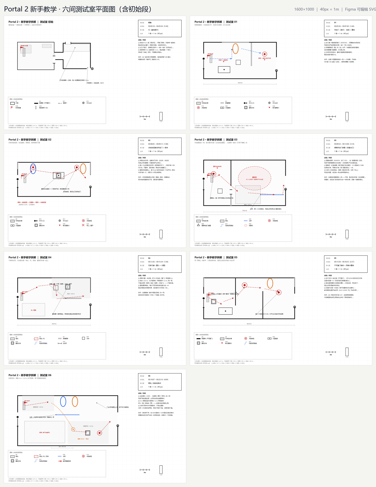
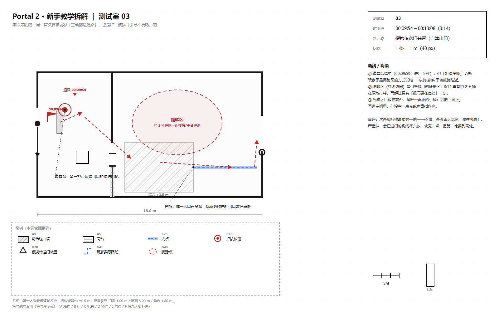
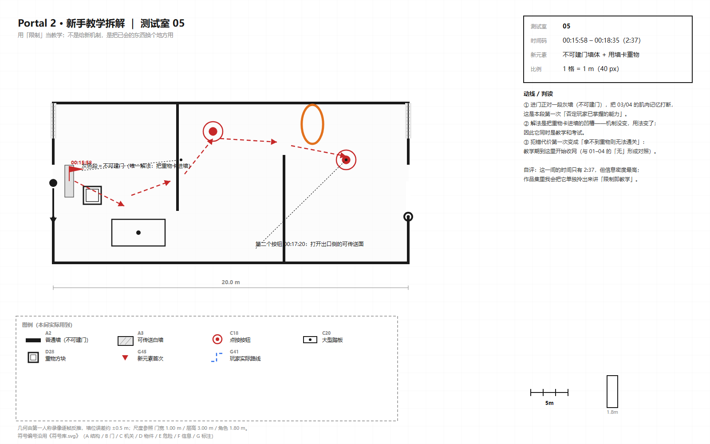
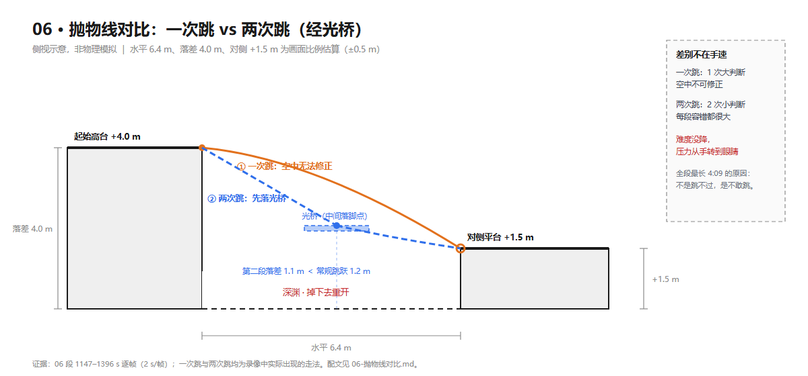

同一套符号、同一比例尺，把「一间房教一件事」的序列摊开看。


进门 5 秒就给传送门枪，但全屋没有一处提示「门可以建在高处」。红虚线圈内是玩家往返最久的区域——视角重复率 6.7%，七间最高。

不新增任何机制，只在灰色墙面上让「建门」失效。玩家被迫把门重新理解为「可以被限制的工具」——六间里信息密度最高的一间。
这部分是拆解真正要交的东西：不是描述关卡长什么样，而是它为什么这样长。
前四间的代价是「无 / 重来几秒」，05 才出现「拿不到重物则不通」，06 才出现「乱跳卡关」。玩家在 15 分钟里以为自己在变强，其实是在被逐步收网。
解法只有一步「把门建在高处」，但没有任何视觉或声音引导。3:14 里约 41% 的时间在同一片庭院与楼梯之间重复经过——这是引导缺口，不是谜题难度。
2:37 内完成从「会」到「懂」的跳跃：机制不变，只让它在某些地方失效，玩家就自己发现了新用法。限制本身就是教学工具。
用黑场检测把录像切成地图级段落，再按「新元素首次出现」把段落切成房间——房间边界由机制决定，不由墙决定。
证据：时间索引（7 段，含 3 处修正）+ 10 次地图加载比例尺、门宽、层高都对着尺度表来；画不出来的不画，反推的部分统一标注「示意图，墙位误差 ±0.5 m」。
证据：7 张平面图的标题栏与页脚「03 是引导断点」这种判断，配一个能复现的数字；数不出来的，就明说它是人工判读、误差多少。
证据：视角重复率 6.7%（自动） / 41%（人工判读 ±10 个百分点）